BRAINY BOTS
A Comprehensive Guide to Essential AI Technologies Used to Empower Workflows

https://www.onlinepoker.ai/wp-content/uploads/2020/11/New-AI-tool.png
Brainy Bots: A Comprehensive Guide to Essential AI Technologies Used to Empower Workflows is a webpage that aims to inform individuals and businesses about the various AI technologies that can be utilized to enhance workflows.
Artificial Intelligence, or AI, is a technology that enables machines to perform tasks that typically require human intelligence. The applications of AI are vast, ranging from healthcare to finance and education. One common
application of AI is for online tools, which are accessible software applications that utilize AI algorithms to perform specific tasks.
AI online tools can be utilized by students, businesses, and individuals to leverage AI technology without the need for in-house development. These tools can simplify tasks, improve productivity, and enhance overall performance.
The available AI online tools are numerous, ranging from language translation, plagiarism checkers, financial analysis, and time management tools, among others. They are designed to empower workflows by automating routine tasks,
optimizing decision-making processes, and enhancing overall efficiency.
For students, AI online tools can assist in research and writing, provide personalized study plans, and help manage academic schedules. For businesses, AI online tools can provide customer support, automate data analysis, and enhance supply chain management.
For individuals, AI online tools can help with personal finance, time management, and improve wellness through personal fitness and nutrition planning.
It is important to keep up to date with the latest AI technologies and how they can be implemented to improve workflows due to the vast range of applications for AI. Whether you're a student seeking research assistance or a business looking to automate data analysis,
AI online tools provide solutions that can aid in achieving goals. By utilizing AI technology, individuals and businesses can streamline their workflows, reduce manual labor, and prioritize more important tasks, leading to improved performance and overall success.
However, as with any new technology, there are concerns regarding the use of AI online tools, particularly related to privacy and security risks. It is crucial to consider these risks and take appropriate measures to protect sensitive data and prevent misuse of technology.
Despite these concerns, AI online tools have the potential to transform workflows and enhance efficiency in a variety of industries, making it worthwhile to explore and utilize this technology.
CHATGPT

https://assets.hongkiat.com/uploads/what-is-chatgpt/ChatGPT.jpg
WHAT IS CHATGPT?
ChatGPT stands for "Chat Generative Pre-trained Transformer". ChatGPT has rapidly emerged as one of the most significant technological launches since the original Apple iPhone in 2007. The chatbot is now the fastest-growing consumer app in history, attracting 100 million users in just two months.
However, it is also an ever-evolving AI shapeshifter, which can be confusing and overwhelming.
ChatGPT is an AI chatbot built on a family of large language models (LLMs) called GPT-3, with OpenAI now announcing the availability of the next-gen GPT-4 models. These models can understand and generate human-like responses to text prompts as they've been trained on vast amounts of data.
For instance, ChatGPT's most original GPT-3.5 model was trained on 570GB of text data from the internet, such as books, articles, websites, and social media, allowing it to create responses that appear like "a friendly and intelligent robot."
ChatGPT is an AI-powered natural language processing tool that enables users to have human-like conversations with the chatbot, which can assist them in tasks like composing emails, essays, and code.
This capability to generate human-like and frequently accurate responses to an extensive range of questions is the reason ChatGPT is the fastest-growing app of all time, attracting 100 million users in only two months. Its capacity to produce essays, articles, and poetry has only contributed to its appeal (and sparked controversy in education).
WHO CREATED CHATGPT?
The creators of ChatGPT are OpenAI, an artificial intelligence research laboratory that consists of OpenAI Inc, a non-profit, and Open AI Limited Partnership (OpenAI LP), a for-profit subsidiary. OpenAI originally created GPT in 2018, which was the first version of what would eventually become ChatGPT.
In the following years, GPT-2 and GPT-3 were released, with ChatGPT being launched in 2022. In addition to ChatGPT, OpenAI is also known for creating other AI models like DALL-E and DALL-E 2.
The main goal of OpenAI is to develop "friendly AI" that benefits humanity. Notable founders of OpenAI include Elon Musk, Peter Thiel, Sam Altman, Reid Hoffman, Jessica Livingston, and Ilya Sutskever.
HOW DOES CHATGPT WORKS?
In essence, ChatGPT works by utilizing natural language processing (NLP) technology that enables it to understand and respond to human language. It leverages OpenAI's large language models (LLMs), which include the latest GPT-3 and GPT-4 models, to analyze text prompts or questions entered by users.
These models have been trained on a vast amount of text data from the internet, which enables ChatGPT to generate a response that is meant to be human-like and relevant to the input.
ChatGPT's primary objective is to predict the next word in a sentence based on its training data. The chatbot accomplishes this by passing user input through its AI model, which generates a response based on the information provided and how it fits into its training data.
The process involves a combination of deep learning algorithms, natural language processing, and generative pre-training, resulting in ChatGPT's ability to produce remarkably human-like responses to text questions. Stephen Wolfram's blog post provides a more in-depth look into how large language models like ChatGPT operate.
HOW TO USE CHATGPT?
In order to use ChatGPT, you must first access the chatbot through one of the platforms it is available on, which includes its official website, social media platforms like Twitter and Discord, and third-party apps and websites. There is currently no official ChatGPT app, so you will need to access it through a web browser on your computer,
tablet, or smartphone. Once you access the website, you will need to create an account, after which you can use ChatGPT for free.
To use ChatGPT, simply type a prompt or question in the text box at the bottom of the screen and hit the paper airplane icon to submit it. You can ask ChatGPT to write a story or answer a question, for example. ChatGPT's response will appear in real time as if it is being typed by a human. Once it has finished, you can provide feedback on the
response using the thumbs up and down buttons.
FOR WHAT PURPOSES CAN CHATGPT BE UTILIZED?
ChatGPT's potential applications are vast due to its training on an immense amount of text covering a wide range of topics. Users have already discovered numerous ways to utilize the AI, which can be broadly divided into language-based tasks and coding assistance. ChatGPT can be used for natural language tasks such as drafting letters, writing poetry,
creating fiction, translations, generating job descriptions, and creating meal plans. It is equally capable of coding and productivity tasks and can create code from natural speech to help new and experienced coders troubleshoot or learn a new language. However, there is also potential for malicious use to create malware or phishing emails.
Beyond the browser-based chat function, the API version of ChatGPT has even more exciting capabilities. It can be used with Siri and has the potential to overhaul voice assistants, such as Apple's. The AI tech is expected to be integrated with popular cloud software and productivity tools, such as Microsoft Office, Google Slides, and Skype. With these integrations,
ChatGPT could provide meeting summaries, make suggestions, and transform these tools into more intelligent and efficient systems.
WHY IS CHATGPT IMPORTANT?
ChatGPT is important because it represents a significant advancement in artificial intelligence (AI) technology. It is a language model that uses deep learning algorithms to understand and generate human-like language responses. ChatGPT's ability to understand and generate natural language makes it a valuable tool for a variety of applications, including customer service,
education, and healthcare. ChatGPT can engage in conversations with people, answer questions, and provide information, making it a useful resource for those seeking answers or assistance.
Additionally, ChatGPT's potential to learn and adapt to new information is significant. As more people interact with ChatGPT, it can learn from those interactions and improve its responses. This means that ChatGPT has the potential to become even more useful over time. Its ability to learn and adapt also has implications for the future of AI technology, as it demonstrates
the potential for AI to become more human-like in its behavior and interactions.
WHAT IS THE DIFFERENCE BETWEEN CHATGPT AND A SEARCH ENGINE?
The primary difference between ChatGPT and a search engine is their approach to answering questions. A search engine relies on a keyword-based search to return relevant results. In contrast, ChatGPT uses natural language processing to understand the meaning behind a question and generate a response that is more human-like. This means that ChatGPT can handle more complex queries
and engage in more natural conversations than a search engine.
Another key difference is that ChatGPT can learn and adapt to new information, while a search engine is limited by its indexing of web pages. This means that ChatGPT has the potential to provide more personalized responses and adapt to the user's specific needs over time. Additionally, ChatGPT's ability to engage in conversations allows for a more natural and interactive experience for the user.
WHAT ARE CHATGPT'S LIMITATIONS?
While ChatGPT represents a significant advancement in AI technology, it still has limitations. One of the most significant limitations is its reliance on existing data to generate responses. This means that ChatGPT may not always provide accurate or unbiased information, as it is limited by the quality and quantity of data it has been trained on.
Additionally, ChatGPT may struggle with understanding the context or nuance of certain questions, which can lead to incorrect or incomplete responses.
Another limitation is its inability to understand emotions or social cues, which can result in inappropriate or insensitive responses. ChatGPT is also limited by its inability to perform physical tasks or interact with
CAN I CHAT WITH CHATGPT?
Yes, you can chat with ChatGPT. There are several platforms and applications that allow users to interact with ChatGPT, including chatbots and messaging apps. These interactions can range from simple queries and requests to more complex conversations. ChatGPT's ability to engage in natural language conversations makes it a valuable resource for those seeking information or assistance.
However, it is important to note that ChatGPT is not a perfect replacement for human interaction. While it can provide useful information and engage in conversations, it lacks the emotional intelligence and empathy that are often necessary in certain situations. Additionally, its reliance on existing data means that it may not always provide accurate or unbiased information.
WHY ARE SOME PEOPLE WORRIED ABOUT CHATGPT?
ChatGPT is a powerful tool that has the potential to revolutionize the way people interact with technology. However, this same potential has caused concern among some people who worry about the unintended consequences of such advanced technology. One of the primary concerns is the potential for ChatGPT to be used for malicious purposes, such as spreading misinformation or manipulating public opinion.
With its ability to generate human-like responses, ChatGPT could be used to create fake news stories, generate deepfake videos, or impersonate real people in online interactions. This has raised concerns about the impact of ChatGPT on the integrity of information online and the potential for it to be used to manipulate people's opinions.
Another concern is the ethical implications of ChatGPT's ability to replace human jobs. As ChatGPT and other AI technologies become more advanced, they have the potential to replace jobs traditionally performed by humans. This could have significant economic and social implications, particularly for those in low-skilled or routine-based jobs.
Furthermore, there are concerns about the privacy and security implications of interacting with ChatGPT. As users engage with ChatGPT, they are providing data that can be used for various purposes, including targeted advertising or surveillance. There is a risk that this data could be misused or hacked, leading to privacy breaches or other security concerns.
Overall, while ChatGPT has the potential to be a valuable tool for a variety of applications, there are valid concerns about its impact on society. It is important for developers, policymakers, and users to consider these implications and work towards responsible and ethical use of AI technology to ensure that the benefits of ChatGPT are realized without causing harm to individuals or society as a whole.
GRAMMARLY
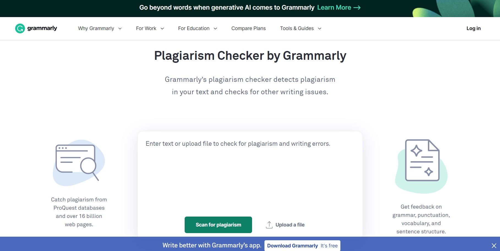WHAT IS GRAMMARLY?
Grammarly helps people communicate with confidence across devices and platforms. Their AI-powered suggestions appear wherever you write, coaching over 30 million people and 50,000 teams every day to improve the correctness, clarity, engagement, and delivery of their writing. Grammarly Premium elevates communication for individual students and professionals,
Grammarly Business drives organizations of all sizes to accelerate business results, and Grammarly for Developers empowers builders to enhance the communication experience for their end users.
Grammarly team members use advanced machine learning to break new ground in natural language processing that analyzes written sentences to understand context and tone. They operate with a remote-first hybrid work model, meaning they primarily work from home and meet for in-person collaboration at their hubs in San Francisco, New York, Vancouver, Berlin, and Kyiv,
or in a shared workspace in Krakow, as conditions allow. Grammarly is one of TIME’s 100 Most Influential Companies, one of Fast Company’s Most Innovative Companies in AI, a member of the Forbes Cloud 100, and one of Inc.’s Best Workplaces.
GRAMMARLY HISTORY

{kind=link}
Grammarly was founded in July 2009 by Alex Shevchenko, Max Lytvyn, and Dmytro Lider. The software program itself is furnished by Grammarly, Inc. and is headquartered in San Francisco, CA. Grammarly also has offices in Vancouver, New York City, and Kyiv.
The company released its initial software program as a paid subscription product and an online editor. The goal was to help students with their writing, helping people learn the basic building blocks of the English language.
A success, Grammarly’s investors attracted the attention of experienced businessman, Brad Hoover in 2011. He became CEO. Hoover helped the initial founders distill the program into a framework that guided everything they did moving forward. He says the company has been profitable almost “since inception”.
Grammarly eventually grew to include a browser extension that could correct basic spelling and grammar issues. The browser extension was released in 2015, leading to an explosion in the average number of daily users. Today, the company employs
GRAMMARLY HISTORY TIMELINE
- In 2009, Grammarly was founded
- In 2010, Grammarly released its editor./li>
- In 2011, current CEO Brad Hoover joined Grammarly.
- In 2013, Grammarly was named on the Inc 500 list. It also released a Microsoft Office add-in.
- In 2014, Grammarly was a Crunchie finalist.
- In 2015, Grammarly released many of its popular extensions for browsers like Chrome.
- In 2016, Grammarly began acquiring mainstream recognition for its grammar checker capabilities. It was featured by many publications including Lifehacker and PC World.
- In 2017, Grammarly completed its first funding round for $110 million. That same year, it released its virtual mobile keyboard on Android and iOS, receiving praise from many reviewers.
- In 2018, Grammarly released a version directly compatible with Google Docs. Instead of copying and pasting their documents into a separate window, users have access to an optimized version of Grammarly for Google Docs. It also began offering Grammarly discounts for users.
- In 2019, Grammarly completed a $90 million seed round with investors, securing its tech unicorn status. It also released a tone detector. This feature enables users to optimize their articles, blog posts and emails for an intended audience i.e. formal, casual etc. The company also increased its spending on YouTube advertising. Grammarly also announced plans for a business version of its grammar checker.
- In 2020, Grammarly released a business version of its software, and a version for iPad. This version supports a custom style guide and extended collaboration.
It also rolled out an advanced AI writing assistant that automatically corrects your writing with a click.
The company released advanced editing tools and a sidebar for Google Docs users. The company also invested in Docugami’s seed round. Docugami provides AI software for creating documents to businesses.
Grammarly also provided support for Microsoft Word and Outlook. Techradar also listed it as one of the best Mac apps for home workers. - In 2021, Grammarly switched to a work from home model for its employees. It also reported that 30,000 teams are using Grammarly Business.
The company released a software developer kit or SDK beta that enables developer to embed automated text editing into any web app. Rob Brazier, head of product at Grammarly told Techcrunch:
“Literally in just a couple lines of HTML, [developers] can add Grammarly’s assistance to their application, and they get a native Grammarly experiences available to all of their users without the users needing to install or register Grammarly,”
GRAMMARLY VALUATION TODAY
Grammarly has raised over $200 million in funding to date. According to a Techcruch report, Grammarly raised over $90 million during its second round of funding, in 2019. With over 20 million users, that placed the company at a valuation of approximately one billion dollars.
Three years is a long time in the SaaS world. Its userbase and feature set has widely grown since then. For example, the company has rolled out Grammarly Business as well as an AI-powered writing assistant. It has also invested heavily in paid advertising.
Today, according to PrivCo and some Crunchbase statistics, the valuation of Grammarly sits somewhere between one and ten billion dollars.
GRAMMARLY AVAILABILITY
Grammarly has expanded to include Windows, Linux, Android, iOS, and World Wide Web operating systems such as Google Chrome, Firefox, and Safari.
Grammarly has expanded its capabilities during the past few years as a freemium program, offering services on multiple operating systems. Since its initial release, Grammarly has expanded to include Windows, Linux, Android, iOS, and World Wide Web operating systems such as Google Chrome, Firefox, and Safari.
While users can still paste documents directly into the Grammarly text box window by visiting the Grammarly site directly, the program has grown to include automatic detection of text boxes, allowing users to optimize their documents without having to paste their work into the Grammarly text box.
THE LATEST GRAMMARLY FEATURES
Grammarly has also worked to sharpen its support on sites with a variety of writing styles, such as casual work on Google Docs or writing targeted to business professionals on LinkedIn. There is also an add-in option for Microsoft Office, available on Microsoft Word for Windows and Mac.
In addition, there is a Grammarly Editor available online with desktop applications, allowing users to steer away from any distracting tabs. You still need to use the internet to access the desktop application. The application provides alerts when you need to change with your writing, offering automated suggestions as you go.
Grammarly has also released a Grammarly Keyboard for Android and iPhone users, along with an integrated editor and keyboard experience for the iPad.
THE DIFFERENCES BETWEEN GRAMMARLY FREE AND GRAMMARLY PREMIUM
The focuses of Grammarly have always been engagement, clarity, correctness, and delivery. This includes the free and premium plans. Components of the free plan include:
- The free plan offers an automated spell-checker.
- The program offers rewrites for conciseness.
- Grammarly free provides help with sentence structure assistance.
- The free version catches punctuation issues.
Grammarly Premium includes all of the features above with a number of other benefits. Premium plan components include:
- The premium plan provides automatic sentence rewrites.
- Grammarly premium offers assistance with vocabulary suggestions.
- The premium version comes with access to an automated plagiarism checker.
The plagiarism detection program automatically checks the internet for anything that resembles the work being written. Then, the overall assignment is given a percentage value that corresponds to the amount of work that closely resembles other pages found on the internet.
That way, writers can correct these issues before they get penalized for plagiarism on publication.
Grammarly premium costs $29.95 per month or $59.95 per quarter. The Grammarly business plan is priced differently depending on the size of the company. Many educational institutions take advantage of Grammarly as well.
WHO SHOULD USE GRAMMARLY
There are several types of writers who should use Grammarly. A few examples of people who should use Grammarly include:
- If you are a student looking for help catching spelling, grammar, and punctuation issues in your writing, Grammarly can automate this process for you
- Students and professional writers who are looking to avoid plagiarizing someone else’s work should take advantage of the premium plagiarism checker offered by Grammarly.
- Business professionals should use the Grammarly Business plan to keep their emails and messages concise, professional, and stylistically correct.
- Anyone who is looking for an automated grammar checker that is easy to use should take advantage of Grammarly’s intuitive features and services.
QUILLBOT
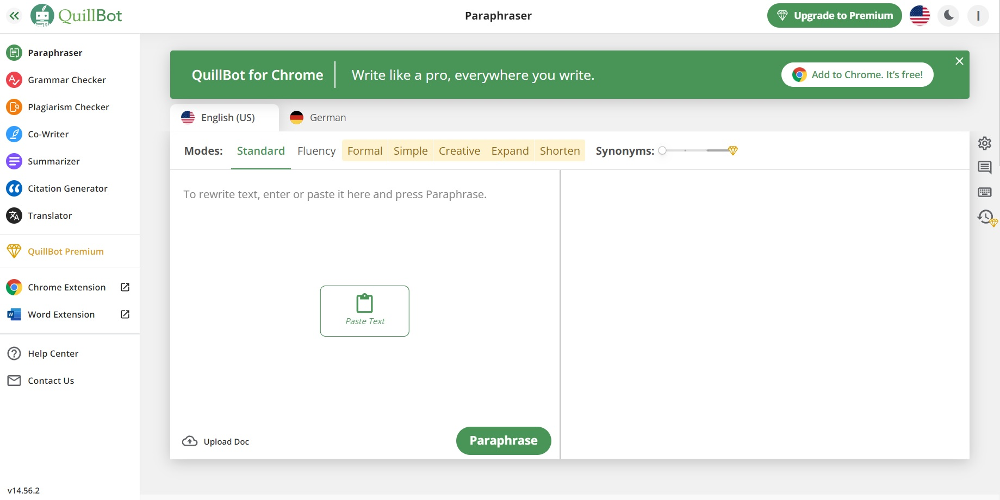WHAT IS QUILLBOT?
QuillBot is an all-in-one AI writing tool that combines different editing features to help users create clear and concise sentences. Quillbot's accurately designed AI helps to paraphrase your text in a matter of seconds.
Used by millions of writers, students and professionals worldwide, Quillbot is the tool to consider for your paraphrasing needs. It’s been around since 2017, amassing over 50 million users worldwide since then.
Modern AI technology is used in QuillBot's toolkit to make writing effortless. Based on the idea that information acquisition and application are more significant than the mechanics of writing,
QuillBot aims to automate these crucial actions in order to improve your language. You may now concentrate on what you write rather than how you should write it.
WHO CREATED QUILLBOT?
The CEO and Co-Founder of QuillBot, an innovative NLP firm with millions of users, is Rohan Gupta. The man has a B.S. both an M.S. and in Finance. from the University of Illinois at Urbana-Champaign in Computer Science. He is enthusiastic about transforming the world, philosophy, and technology.
QUILLBOT'S AVAILABILITY
QuillBot is primarily web-based, but it is also available as an extension on Microsoft Word, Google Chrome, and Google Docs. The easiest way to use Quillbot is to visit the Quillbot site, log in and open up its web app. Then, select the right feature from Quillbot, paste or upload your text and get to work. Alternatively, you can install a Chrome plugin or a Microsoft Word plugin and scan text as you write online or in Word.
INSTALLING QUILLBOT ON MICROSOFT WORD
The installation procedure is not that difficult.
- Be sure to sign into Word.
- Choose Add-ins from the Insert tab.
- Choose the Office Store button
- Choose the Add button after searching for QuillBot.
- Go back to Insert and choose QuillBot from My Add-ins.
- Lastly, open QuillBot from the tab you just established and log in with your credentials.
SETTING UP QUILLBOT ON GOOGLE CHROME
It works the same way as installing a typical extension on Google Chrome. Choose Add to Chrome after conducting a search for QuillBot in the Chrome Web Store. On the QuillBot website, you may also click Google Chrome under the extension page. You'll be sent straight to the Web Store page.
The Chrome extension's great feature is that it also functions with other Chromium-based browsers. Hence, it ought to operate just fine if you use Brave, Vivaldi, or even the newest version of Microsoft Edge.
QUILLBOT PRICING
Free Subscription
The free plan of Quillbot provides some basic paraphrasing and summarizing capabilities and comes with a character limit.
Premium Subscription
QuilMlbot's premium version must be purchased in order to be used effectively. The Quillbot premium programs are simple to understand:
- Monthly fee for a premium subscription is $20.
- Subscriptions purchased annually or semi-annually are eligible for discounts.
- At $20 per month, the plagiarism detector examines 20 pages (about 250 words).
- Cost of 25 extra pages: $7.45
- During 72 hours after making a purchase, you are eligible for a 10% money-back guarantee.
QUILLBOT'S FEATURES
Paraphraser
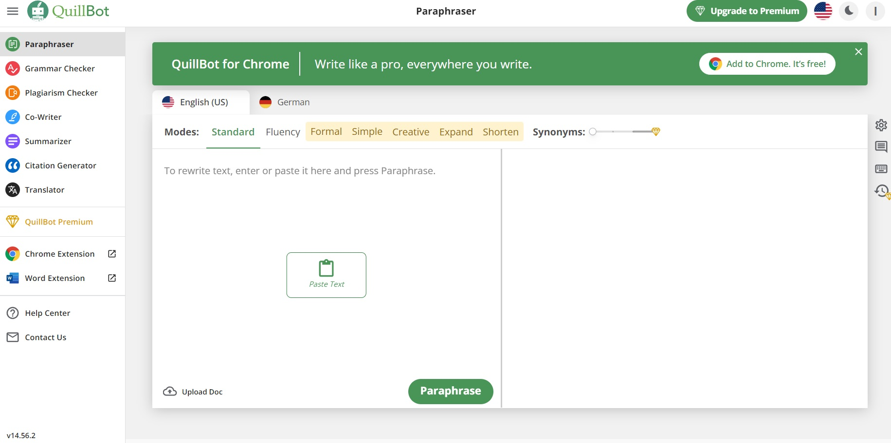The main draw of QuillBot for most users is paraphrasing. It rephrases sentences, just as the name implies. It allows you to rearrange phrases both partially and completely without altering the sense of the original text. The first two editing modes are Standard and Fluency, and there are seven total. Later on in this essay, we'll go into more detail about them. Also, the program opens with the Paraphraser option selected by default, making it simple to access. Just paste the information or enter the sentence(s) you wish to reword in the left textbox when it has been opened. A button to upload a corrected version of the complete document is also there. Just click Rephrase once the text has been entered into the textbox. Depending on the Quill-mode you choose, the AI will adjust the material, and the outcome will appear on the right. A Synonym bar is also included with Paraphraser. You have control over how many modifications the AI may make to the text thanks to this useful function. The outcome will be closer to the original text's meaning the lower the bar, and vice versa. From low to high, there are four points. With the exception of Fluency mode, when it is on the first dot, the tool is always on the second dot.
Summarizer
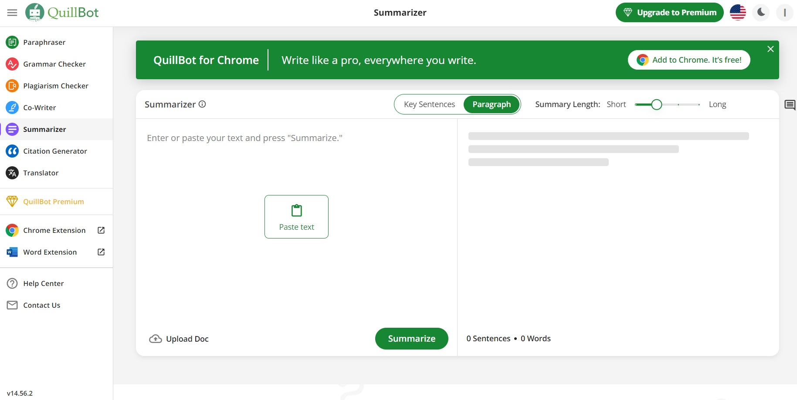Long paragraphs are condensed or made as dense as feasible using QuillBot's Summarizer.
It accomplishes this using two functions. a Key Sentences option that breaks down the key sentences into bullet points.
a paragraph mode that cuts out the extraneous text and produces a paragraph with greater coherence.
For articles, papers, and other document types, both functions are applicable.
Both methods are equivalent to using the Paraphraser. Copy the material, type it, or upload it first. Choose Summarize in your preferred method.
Also, you may choose the summary's depth. You may select whether you want a shorter or longer summary by changing the Summary length.
The sweet spot in this situation is positioned in the center. A lengthier summary has more fluff than a shorter one, which is false.
Grammar Checker
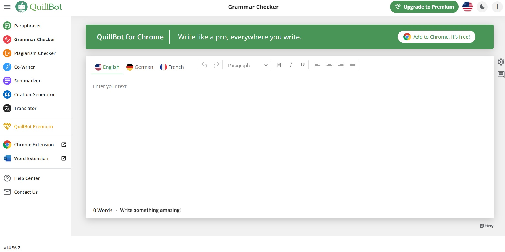You can correct errors in the findings of the Summarizer and Paraphraser by using Grammar Checker.
The program operates in the same way as standard grammar checkers. It corrects grammatical, punctuation, and spelling mistakes.
The outcomes of the other qualities are not fixed by it either. The Checker also functions as a word processing program with several heading and stylistic options.
There are all four orientations as well (left, center, right, justify).
Also, you may quickly and easily correct any errors by using the Repair All Mistakes button.
Finally, by clicking the Download symbol in the bottom right-hand corner, you may download your work into an MS Word document.
Citation Generator
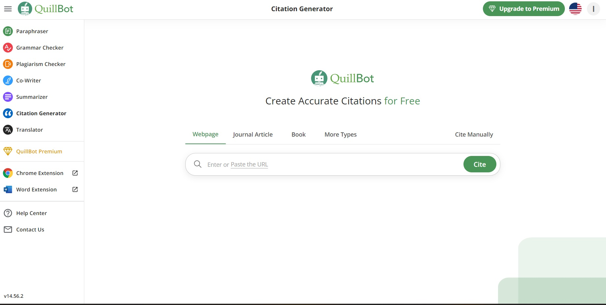Citing sources in one's writing is a common need for academics, authors, and writers in general. It doesn't matter if it's a book, essay, or presentation.
Users may quickly construct citations with a link or book title using QuillBot's Citation Generator.
The application automatically pulls the page's essential information, including the title, author(s) name, and published date, when you enter the link or title.
It asks you to manually enter the data when the information is not accessible.
Once you're done, click Save Citation, and the Generator will generate a comprehensive citation in accordance with the predefined format. The function supports the APA, MLA, and Chicago formatting standards.
You can also make several citations and separately copy the findings that are created. By downloading them as an MS Word document, you may export them all at once.
Plagiarism Checker
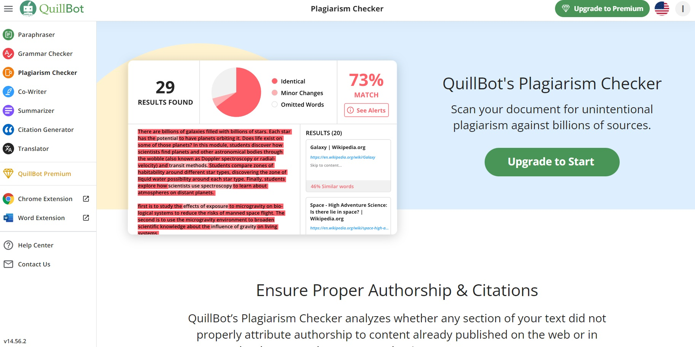For academicians and essayists, the Quillbot plagiarism checker performs superbly. Fundamentally, authors of essays can upload or paste them into the plagiarism analyzer. The process of scanning an essay takes some time.
Next Quillbot displays a report showing if the author accidentally (or knowingly!) plagiarized. As an alternative, a student might utilize this program to locate any omitted citations and prevent unintentional plagiarism.
On a per-page basis, the plagiarism detector operates. 5,000 words or the first 20 pages are included with a monthly membership. You will then need to purchase more pages. Past plagiarism scans are always available to you without further cost.
Co-writer
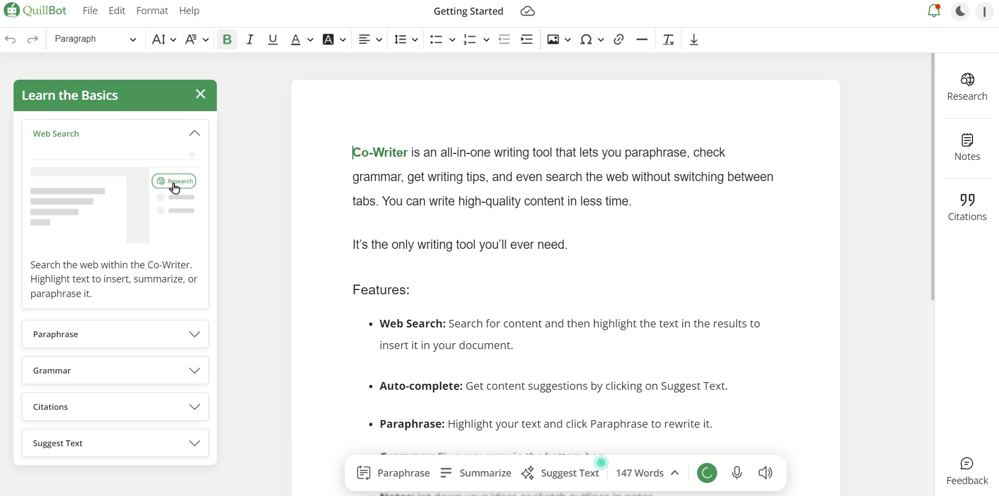All of the aforementioned tools are combined into one writing project using the beta tool known as The Cowriter. Choose a topic first, then use the Research tab to look for information on it.
Then Quillbot displays related web stuff. A writer can use these sources in their writing, sum up or paraphrase other authors' works, and properly credit them.
Imagine it as a content spinner driven by AI. Whilst it won't aid with SEO, it is comparable to how a content optimization tool like Clearsope functions.
Translator
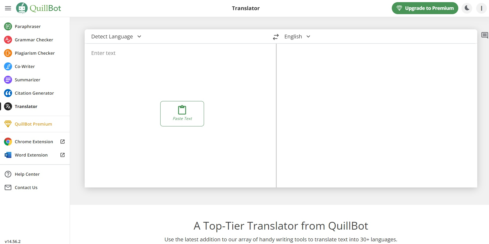Quillbot has recently launched a robust new translator. This tool not only helps language learners to translate complex texts, but also allows them to compare languages side-by-side,
enabling them to comprehend the subtleties of sentence structure, word choice, and verb conjugation. With over 30 languages supported, including French, Spanish, German, Ukrainian, and Japanese,
QuillBot's innovative AI-powered tools can help users make sense of idioms and other language idiosyncrasies that frequently puzzle language learners.
According to Rohan Gupta, QuillBot's co-founder and CEO, "QuillBot, and especially our translator, was born out of our own personal experiences and challenges of requiring accessible assistance
to understand how to write well, while also preserving the original intent. We are dedicated to bridging cultural gaps and facilitating a deeper and more relatable comprehension of text, as well
as guiding users through the most difficult aspects of writing and aiding them in honing their skills."
DESIGNS.AI
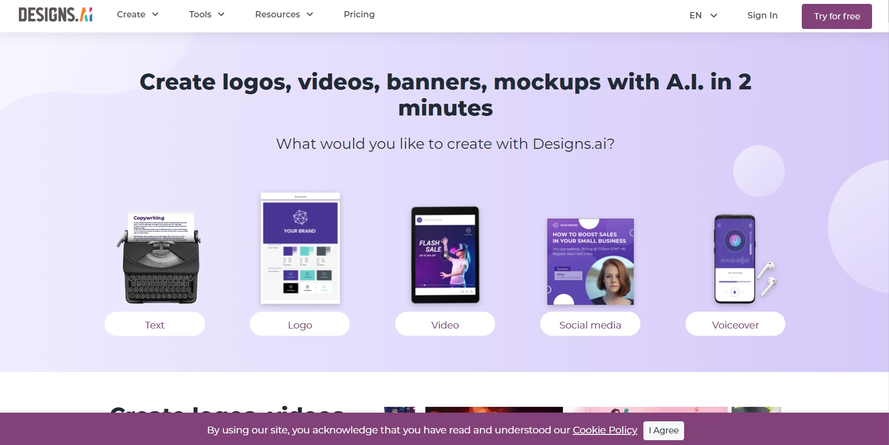WHAT IS DESIGNS.AI?
The Designs.ai is an all-in-one design solution that brings together the power of AI and the creativity of human designers. Whether you're looking to create logos, social media graphics, and more.
One of the key benefits of Designs.ai can assist by generating unique design concepts. This feature can help you come up with fresh ideas for your designs, whether you're working on a new logo or a social media post.
It can also suggest color palettes and fonts that work well together, taking the guesswork out of design. It also offers the expertise of human designers. These designers can provide guidance and advice to help you
create designs that truly reflect your brand and your vision. The human designers at Designs.ai are there to help.
Designs.ai is a web-based platform that utilizes its own AI technology to provide easy access to design tools for everyone. This means that users with little or no design experience can create impressive marketing portfolios
in a short amount of time, thanks to the platform's intuitive interface and AI-powered features. By using Designs.ai, users can overcome the barriers of traditional design methods and create high-quality designs effortlessly.
WHO CREATED DESIGNS.AI?
The company was founded in Jan. 2019 by Warren Leow, who is an experienced entrepreneur and AI expert. He is the CEO of Designs.ai and the Interim, Group CEO of Inmagine Group. He previously worked at Amazing Fables as the Founder.
He attended The London School of Economics and Political Science.
The platform leverages artificial intelligence and machine learning algorithms to provide various design solutions. It has a range of tools for creating logos, generating brand names, designing websites, creating social media posts, and more.
The AI-powered tools are designed to simplify the design process, making it more accessible to everyone, including small businesses and individuals.
Designs.ai uses a combination of natural language processing, image recognition, and other AI technologies to power its tools. The platform's AI algorithms are trained on vast datasets of design and branding information, enabling them to generate
high-quality designs that match a user's preferences and requirements.
Overall, Designs.ai is an exciting example of how AI is transforming the design and branding industry, making it easier and more efficient for businesses and individuals to create high-quality designs and build strong brands.
WHAT ARE THE TOOLS THEY OFFER?
Designs.ai is a complete design solution that provides users with a range of tools to create stunning graphics, videos, logos, and mockups. By using these tools, users can save valuable time and resources compared to traditional design methods.
Moreover, Designs.ai offers additional features to help in the design process, such as collaboration tools for team projects and integration options to access brand assets quickly. Overall, Designs.ai is an easy-to-use platform that provides diverse design options and functionalities to simplify the design process.
Designs.ai offers several key features such as:
- Logo Maker: This tool allows users to quickly and easily create a custom logo and branding kit without any design experience.
- Video Maker: Using unique text-to-video technology and voiceover options, users can create professional-looking videos with ease.
- Design Maker: This tool provides users with the ability to design various items, including posters, greeting cards, menus, brochures, and more, either from scratch or by utilizing the available templates.
- Speech Maker: With this feature, users can generate a voiceover for their script and adjust the tone and pitch to fit their needs.
In addition to its main features, Designs.ai provides users with assistive tools to enhance their designs. These tools include:
- Font Pairer: This tool helps users find the perfect matching fonts for their designs, ensuring a cohesive and professional look.
- Color Matcher: With this tool, users can easily find complementary colors for their designs, enhancing the visual appeal of their creations.
- Graphic Maker: This tool allows users to create graphics using highly customizable templates, allowing them to personalize their designs according to their needs.
Overall, Designs.ai offers a range of tools that can assist users in creating high-quality designs and content with minimal effort and time. These assistive tools can help users elevate the quality of their plans and create more visually appealing content.
HOW DOES DESIGNS.AI HELP AGENCIES AND FREELANCERS?
Designs.ai utilizes creative automation to enable agencies and freelancers to concentrate on client engagement, ideation, and strategy, by automating time-consuming design tasks. This enables quicker turnaround and higher volume creation across multiple channels. Furthermore, Designs.ai's collaboration feature enables agencies and freelancers to simplify client communication, allowing them to share their work-in-progress instantly for feedback and approval. Overall, Designs.ai helps agencies and freelancers to increase their productivity and efficiency, while also enhancing their ability to collaborate with clients effectively. Click here to learn more about our agency offerings.
ARE MY DESIGNS.AI CREATIONS LICENSED FOR COMMERCIAL USED?
All finished projects made with our creative AI tools can be distributed to promote and advertise your business. You may also resell your creations as a service to clients. However, you cannot sell, distribute, or license individual assets found within the platform.
WHO CAN USED DESIGNS.AI?
Designs.ai can be used by anyone who needs graphic design tools and wants to create professional-looking designs quickly and affordably. Some specific groups of people who may benefit from using Designs.ai include:
- Small business owners who need to create logos, business cards, and other branding materials.
- Marketers who need to create ads, social media posts, and other promotional materials
- Freelance designers who want to streamline their workflow and create designs faster
- Individuals who need to create designs for personal projects, such as invitations or resumes.
Overall, Designs.ai is designed to be user-friendly and accessible to anyone, regardless of their design experience or background.
WHAT ARE THE ADVANTAGE AND DISADVANTAGE OF DESIGNS.AI?
Advantages of using Designs.ai include:
- AI-powered design tools that allow users to create professional-looking designs quickly and easily.
- A wide range of design templates and assets to choose from, including logos, business cards, and mockups.
- Flexible subscription plans that cater to different user needs and budgets.
- User-friendly interface and intuitive design tools that require no prior design experience.
- Ability to save time and money compared to hiring a professional designer or using expensive design software.
Disadvantages of using designs.ai may include:
- Limited customization options compared to designing from scratch or using professional design software.
- Limited options for integrating designs with other software or platforms.
- Dependence on AI and automation, which may not always produce the desired result or require human intervention.
- Limited availability of customer support, especially for free and pay-per-use users.
- Potential risk of similarity or copyright infringement if users do not carefully review the designs they create.
WHAT ARE THE DIFFERENT SUBSCRIPTION YOU CAN USED?
Designs.ai offers different subscription plans that users can choose from depending on their needs. These plans including a free plan,
paid subscription plans include the Basic, Pro, and Enterprise / Agency plan.
Here is a breakdown of the pricing plans for Designs.ai, along with the potential cost savings when choosing between monthly and annual subscriptions:
Free
For individuals who want to try out the Designs.ai tools
$0
Basic
For individual, students, and marketers that need quick, easy projects
$19/Month
$228/annum
Pro
For entrepreneurs and small teams that need advanced editing and professional templates
$49/Month
$588/annum
Enterprise/Agency
For large teams and agencies that need unified branding at scale and collaboration
TLDR THIS
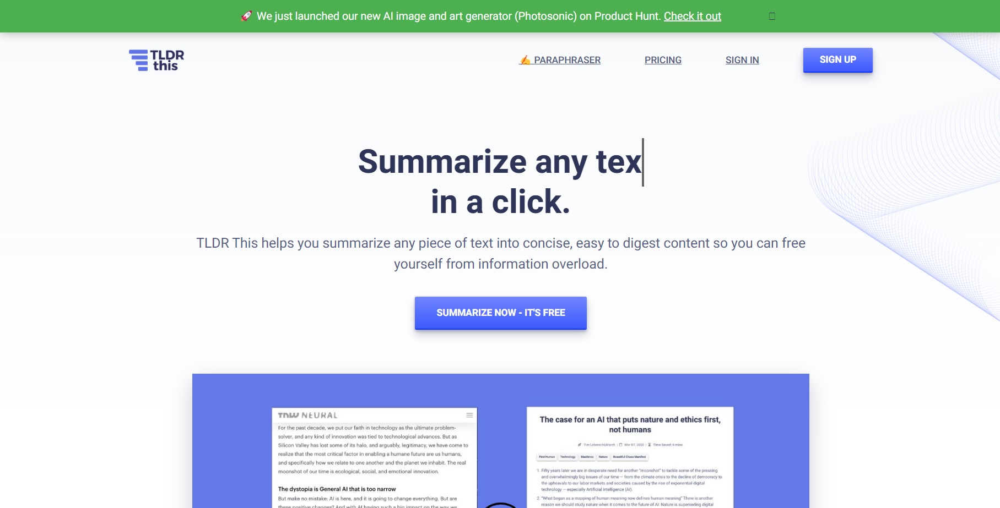WHAT IS TLDR THIS?
TLDR This is an online AI tool that helps users summarize any text into an easy-to-read, understandable, and concise form with just a few clicks of a button.
It boasts automatic article and text summarization with a few clicks that helps users with the huge amount of information that they can find in essays, websites,
and other long texts. TLDR This’ AI can analyze any piece of text and turns it into a short summarization that users can quickly understand and act on.
It extracts key details from news stories and blog posts, including the author, date, associated images, and several other metadata, and puts everything in one place.
TLDR This is made for anyone with access to the internet, especially students, workers, teachers, academics, and other people who read text on a daily basis.

https://yt3.ggpht.com/a/AATXAJznAcsjx7zqtCbTF-BsFoRbbV5B_stdrngbjQ=s900-c-k-c0xffffffff-no-rj-mo
>According to Max Woolf, the developer of TLDR This, the idea for the online tool came about after he found himself overwhelmed with information he was consuming on a daily basis.
He wanted a tool that would help him quickly get to the main points of an article , without having to read the entire text. Woolf developed the tool using machine learning and natural language processing techniques ,
which allow the tool to identify the key themes and ideas of a text and generate a summary of those themes.
TLDRThis.com works by using an algorithm that analyzes the text of an article and identifies the most important sentences and phrases. The tool then generates a summary of the article by condensing those sentences and
phrases into a few concise bullet points. Users can either paste in the text of an article or provide a URL to the article, and the tool will generate a summary in a matter of seconds.
The summaries generated by TLDRThis.com are typically 1-3 paragraphs long and provide a quick and easy way for users to get a sense of the main ideas of an article without having to read the entire text.
THERE ARE 4 OPTIONS FOR SUBSCRIPTIONS IN TLDR THIS: FREE, STARTER, PROFESSIONAL, AND BUSINESS.
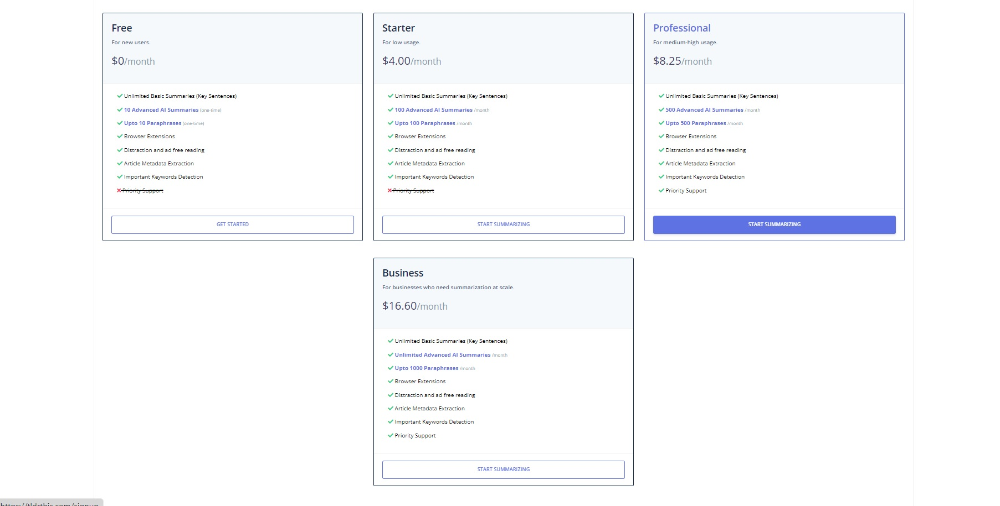Free
Unlimited Basic Summaries, 10 Advanced AI Sumamries, Up to 10 Paraphrases, Browser Extensions, Distraction and Ad-Free Reading, Article Metadata Extraction, Important Keywords Detection
Starter
Unlimited Basic Summaries, 100 Advanced AI Sumamries, Up to 100 Paraphrases, Browser Extensions, Distraction and Ad-Free Reading, Article Metadata Extraction, Important Keywords Detection
Professional
Unlimited Basic Summaries, 500 Advanced AI Sumamries, Up to 500 Paraphrases, Browser Extensions, Distraction and Ad-Free Reading, Article Metadata Extraction, Important Keywords Detection, Priority Support
Business
Unlimited Basic Summaries, 1000 Advanced AI Sumamries, Up to 1000 Paraphrases, Browser Extensions, Distraction and Ad-Free Reading, Article Metadata Extraction, Important Keywords Detection, Priority Support
WOLFRAM ALPHA
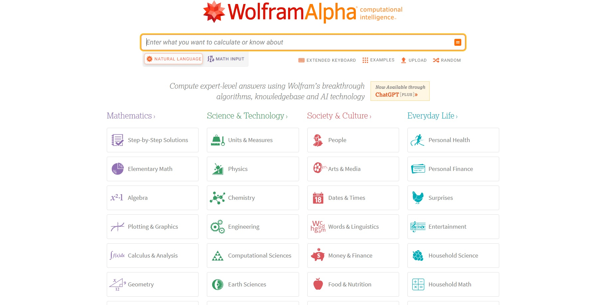WHAT IS Wolfram Alpha?
By performing dynamic computations using a huge array of built-in data, techniques, and methods, Wolfram|Alpha offers a fundamentally
new paradigm for finding knowledge and answers, instead of just web searches. This makes expert-level knowledge accessible to everyone. anywhere, at any time.
According to the official website, wolframalpha.com, its long-term goal is to make “all systematic knowledge immediately computable and accessible to everyone”.
Their goal is to gather and organize every piece of verifiable data, use every model, technique, and algorithm that is currently available, and enable the computation of anything that can be computed.
Their work leverages on scientific advances and other knowledge systematizations to offer a single source that can be trusted by everyone for conclusive responses to factual questions.

https://physicsworld.com/wp-content/uploads/2019/10/PWCOMPNov19Wolfram_frontis.jpg
>Wolfram|Alpha is a long-term intellectual project that has been energetically cultivated for more than 10 years. The idea for the system came about in the early 2000s,
when computer scientist Stephen Wolfram became interested in the idea of creating a system that could answer questions using a combination of data, algorithms, and natural language processing.
After years of development, Wolfram Alpha was officially launched in 2009, and it quickly gained popularity as a tool for answering a wide range of questions and performing calculations across many different disciplines.
Wolfram Alpha works by using a vast collection of data and algorithms to generate its answers and results. When a user inputs a question or query, the system analyzes the input using natural language processing techniques to identify the user's intent.
It then uses a combination of algorithms and data from various sources to generate a response to the query. The system can perform calculations, generate graphs and charts, provide information about a wide range of topics, and even answer questions that
require a combination of different types of data. The system is constantly updated and improved with new data and algorithms, and it is used by individuals, businesses, and researchers around the world.